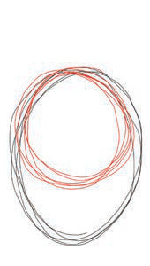
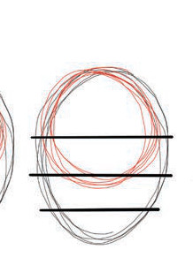

Figure 7: The use of cylinder shapes in drawing the human being's hands
Activity 5
Draw human being's hands by using cylinder shapes and circles.


Figure 7: The use of cylinder shapes in drawing the human being's hands